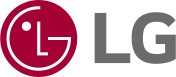

• (주)도움과나눔
모금과 기부 분야의 비영리 전문컨설팅 기업, 비영리기관, NGO등의 실무자들을 위한 교육, 모금지원 사업

• CJ도너스캠프
CJ나눔재단에서 운영하는 소외된 어린이 및 청소년을 위해 만들어져 다양한 교육 프로그램을 지원

• LG재단
LG 그룹이 운영하는 기업의 사회적 기부와 경영이념을 실현한 LG의 사회복지 재단
• 구세군자선냄비본부
기독교 교회인 동시에 사회봉사단체로 세계112개국에서 활발한 사회사업을 전개하는 구세군의 이웃사랑운동을 대표하는 자선냄비 운동

• 국경없는 의사회
전쟁, 기아, 질병, 자연재해등 생존을 위협받는 이들을 치료하는 국경없는의사회
• 기부문화연구소
전문적, 지속적, 체계적인 모금개발을 위한 자료조사, 연구, 지식제공
• 동그라미재단
모두에게 공평한 기회가 주어지는 사회를 표방하며, 지역의 혁신과 변화를 위한 창업지원 프로젝트, 세발자전거 멘토링, 공간나눔사업, 비영리리더스쿨, 연구사업을 수행함
• 밀알복지재단
국제개발협력NGO 밀알복지재단, 국내아동결연, 해외아동결연, 독거노인 지원, 빈곤 장애아동 저소득가정 지원
• 부스러기사랑나눔회
빈곤아동/청소년 나눔사업, 아동결연 후원, 아동청소년 사회복지시설 운영, 지역아동센터운영지원, 기부참여 안내
• 사회복지공동모금회
'사랑의 열매'를 상징으로 나눔문화 확산을 통해 아동·청소년, 장애인, 노인, 여성, 지역사회 등 다양한 분야의 복지사업을 지원하는 국내 최대의 모금 및 배분기관